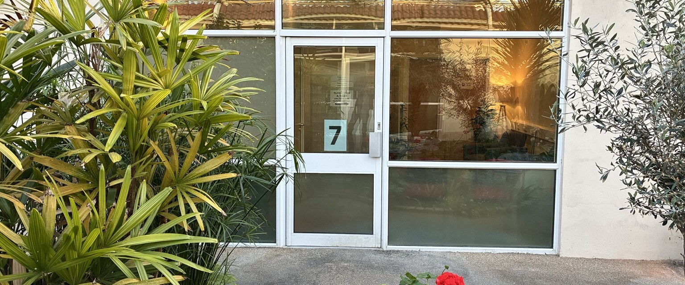
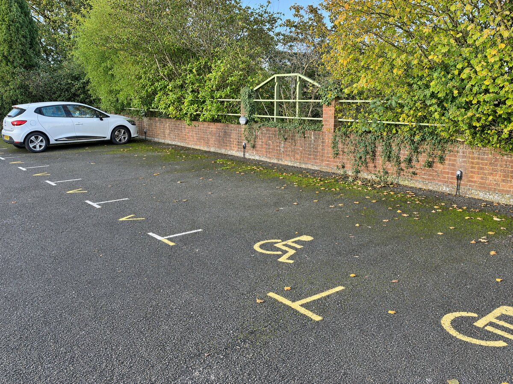

Find the clinic
Easy to find.
Easy to arrive.
Justin Scriven Physiotherapy is at Glasshouse Studios, just outside the centre of Fordingbridge.
Your destination
Glasshouse Studios Unit 7Fryern Court Road
Fordingbridge
Hampshire · SP6 1QX
What3Words: ///encroach.strength.stream

How to find Unit 7.
Follow the route from Fryern Court Road to the visitor parking and the clinic door.
View the mapMap
Directions by car
From the north of Fordingbridge
Drive south on the A338.
Route option 1 via Burgate Cross
- At Burgate Cross, turn right off the A338 onto Fryern Court Road. Note: This road is liable to flooding after heavy or prolonged rain.
- Follow the road around to the left towards Whitsbury Road.
- Just before you join Whitsbury Road at Tinkers Cross, turn left into Glasshouse Studios.
Route option 2 via Burgate School
- Leave the A338 at Burgate School and head towards Fordingbridge.
- Take the first right onto Waverley Road, then right onto Pennys Lane, left onto Burnham Road and right onto Whitsbury Road.
- At Tinkers Cross, turn right onto Fryern Court Road, then take the first right into Glasshouse Studios.
From the south of Fordingbridge
Drive north on the A338 towards Salisbury, then follow route option 2 via Burgate School above.
When you arrive
Park in the visitor parking immediately on your right. Enter the older glasshouse on your left, opposite the car park. Follow the path to the right of the garden. The clinic entrance is next to the fountain at the far end.
There’s a ramp for wheelchair access and a toilet on the way in.
Parking
Turn immediately right as you enter the car park. Park in a visitor space marked V. There are also two accessible parking spaces in this area.
If the visitor spaces are full, you can park in a space marked 7.

A little extra help
Plan a comfortable arrival.
If you have any worries about parking, walking from the car or accessing the clinic, please contact me before your visit. I’ll be happy to help you plan the most comfortable way to arrive.
Ask about access →